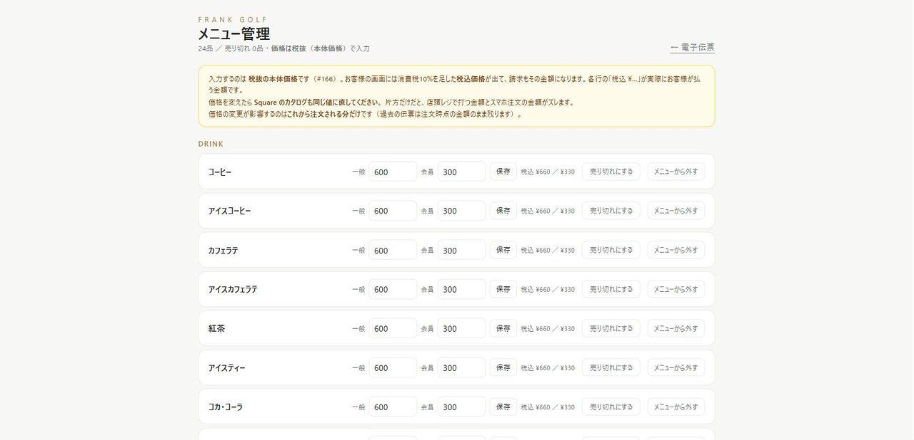

PROBLEM
こんなお悩みはありませんか
先月いくら儲かったか、月末を締めるまで分からない
レジ締め・金種チェックが毎日の負担
どのコーチがどれだけ売っているか見えない
FEATURES
できること
- 売上入力・現金出納・金種棚卸（レジ締め）・クレジット／銀行のCSV取込
- 店舗別・事業別の損益が自動。担当コーチ別の売上・客単価まで出ます
- 売上を入力すると在庫が自動で減ります（在庫・棚卸管理と連動）
SCREENS
実際の画面
レジ締め（金種棚卸）がそのまま現金出納になり、カード・口座の取込明細と突き合わせて「合っているか」を毎日その場で確認できます。
再現画面

売上・現金のダッシュボード店頭売上の内訳、確定経費、現金残高、未仕分けの明細を1画面で。月末を待たずに数字が見えます。
実画面

店頭・スマホ注文の価格管理一般価格と会員価格を品目ごとに設定。売り切れもワンタップ。注文はそのまま売上に入ります。
※「実画面」は本番環境のスクリーンショットです（お客様の氏名・電話番号・メールアドレスのみサンプルに置き換えています）。「再現画面」はログインが必要で公開できない画面を、同じレイアウト・同じ配色でサンプルデータにより再現したものです。デモでは実機で全画面をそのままお見せします。
他社との違い
会計ソフトは「決算のため」の道具で、レジ締めや金種棚卸、コーチ別の売上は守備範囲外です。YOZANは現場の入力がそのまま経営数字になります。
店舗まるごとセット に含まれています。セットなら単品合計より2〜4割お得です。→ セット料金を見る